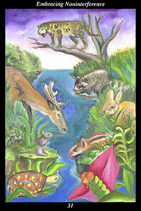

 | IMAGEMany different kinds of animals gather peacefully to drink from the river of life. |
INTERPRETATION
This hexagram depicts the single source of life, from which every life receives its rightful share. The different kinds of animals symbolize the various needs, wants, and interests of those involved. The river of life symbolizes the resources to sustain all. That the animals gather peacefully to drink from the river means that all concerned have enough and do not need to compete with one another to ensure their well-being. Taken together, these symbols mean that you help create a time of peace and prosperity for all concerned.
ACTION
Just as the river is a material blessing bringing water to everything equally, the feminine creative force is an invisible presence bringing
benefit to all equally. It is a time for trusting that need is being met even if you cannot see how: in practice, this means that it is essential that people and events be allowed to develop naturally, without any outside interference. In this sense, it is important that you resist interfering with others as diligently as you resist the efforts of others to interfere with you. It is a delicate time and one that is easily misinterpreted: it does not call for isolationism or callous disregard of others’ suffering but, rather, for impartial benevolence. Nature does not show its impartiality by ceasing to provide air, water, and food to all. Nor does it show its benevolence by giving air, water, and food to some and not to others. Because you mimic nature you give to each all that you can according to the season—and you do so without using your gifts as leverage by which to influence the actions of others. Likewise, you are most careful when accepting gifts or assistance at this time: sensing there are conditions placed on your acceptance, you look elsewhere for assistance because accepting the wrong type of favor in this climate is particularly ill-timed. In all your interactions with others, be on guard against your own ulterior motives as vigilantly as you guard against the ulterior motives of others. Because you are attuned to the positive value of impartial benevolence, you become a well of
benefit nurturing the right of others to make their own decisions and determine their own destiny.
INTENT
When people interfere in the rightful destiny of others, they create a backlash of resentment and retribution that inevitably surfaces to strike them back. For this reason, self-interest is best served by not intervening in the decisions or development of others. When relationships reflect the mutual respect of warriors who are able to exercise self-control, then alliances thrive, creating harmony, contentment, and well-being for all its members. When we bring
benefit as impartially as the river waters all it touches, then we are welcomed into the invisible presence of the feminine creative force as lovingly as we have embraced all we have touched.
SUMMARY
Things are going as they should. Refrain from trying to change them at this time. Let matters take their natural course. Intervening now will create greater problems for all concerned. Demonstrating trust and respect now will create greater opportunities for all concerned. Where you are unsure, investigate matters more deeply, seeking greater understanding rather than initiating action.
THE LINE CHANGES
1° Standing out from the crowd is no cause for celebration—this draws unwanted attention and impinges on your freedom to act. Do not display your talents or understanding now—focus on independence, not recognition. Do not associate with those who are reckless or ambitious.
2° When a relationship enters a phase of emotional darkness, it often seems easier to end it than to repair it. But that decision is often made out of grief for the ideal that has been lost. If you show you are committed to seeing this through at all costs, the other may be reassured enough to try.
3° A small band of dedicated allies can bring down a much stronger regime—but victory is never as swift or complete as one imagines. The greater the success, the more time must pass before its effects take hold. Know when you have won and let others supervise the long-term reorganization.
4° When you have served inside an organization for a while, you know its real intentions. When you know those to be corrupted, leave and join another organization where your firsthand knowledge can be put to good use. In time, you may return to help your former peers redeem themselves.
5° Ethical behavior does not mean always telling the truth, for to tell a tyrant the truth may result in the harming of an innocent. Deceiving the corrupted in order to
benefit the innocent is high ethical behavior. Your light must be veiled during this conflict, but it will shine brilliantly afterward.
6° Strength is not more powerful than wisdom, ruthlessness is not more effective than ethics. The high and mighty may have their day but their fall will be remembered for years. The pendulum is about to swing out of darkness again—be patient a while longer and plan for what follows.